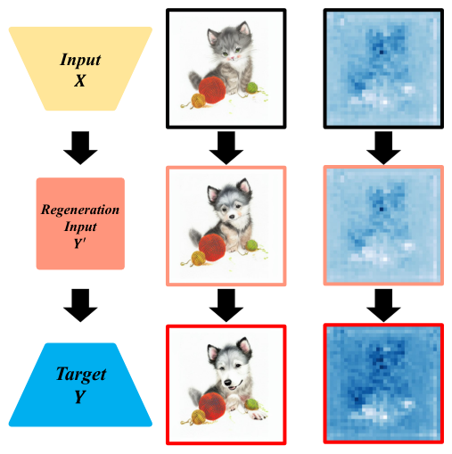

2023 · Preprint
ReGeneration Learning of Diffusion Models with Rich Prompts for Zero-Shot Image Translation
arXiv:2305.04651

Overview
Explores regeneration learning for zero-shot image translation, using cross-attention guidance and cooperative updates to preserve source-image structure without additional model training.